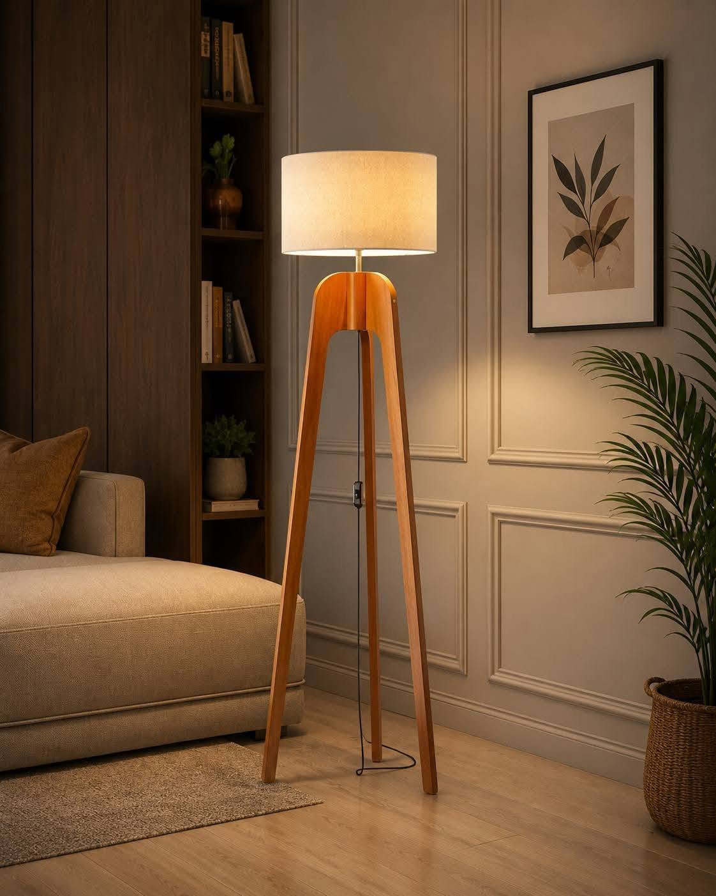

A favourite chair, a good book, and a softer pool of light. Sometimes, that’s all a room needs.
SHINE THROUGH / THE JOURNAL

Spaces to pause. Light to live with.
01
Begin with your favourite seat.
You don’t need a spare room to make space for a slower evening. A corner of the living room, a chair beside a window, or the quiet end of a sofa can become a place of its own. Start where you already like to sit, then think about what would make it easier to stay a little longer.
Before moving anything, notice the space at different times of day. A lovely patch of morning light can become a shadowy corner after sunset. Your lamp is there to help that same spot feel inviting when the natural light fades.
02
Bring the light to the moment.
Try a shaded floor lamp beside and slightly behind the chair, then check the light from your usual seated position. The aim is to bring light to your page without having a bright bulb directly in your line of sight. Adjust the arrangement until it feels comfortable for you.
Think about the room around the chair, too. Another gentle source of light elsewhere can keep your corner from feeling like a bright island in a dark room. Experiment with the lamps you already own before deciding what to add.
03
Leave room for the small things.
A surface for a cup, a place for the book you’re halfway through, and a little breathing room can do more than a long list of accessories. Keep the lamp base and its cable clear of the route through the room, and follow the lamp’s placement instructions.
Finally, sit down. Is your book easy to see? Can you reach what you need? Does the arrangement feel as good to use as it does to look at? Make those small adjustments first. The best reading corner is the one you find yourself returning to.
A simple way to think about lighting a room, from the overall atmosphere to the little details.
SHINE THROUGH / THE JOURNAL
Spaces to pause. Light to live with.
01
Think in moments, not fixtures.
A living room asks for different things throughout the day. You might want to see the whole space while tidying, a closer light while reading, and a gentler atmosphere when the conversation carries on into the evening.
Instead of asking one light to do everything, start by naming those moments. This makes it easier to decide where a lamp will genuinely help, and where the room already has enough.
02
Build from the room to the corner.
Begin with the light that helps you move through the room. Then consider a lamp beside a chair or work surface, where you need light for a particular activity. Finally, notice whether a small pool of light on a sideboard or shelf would bring balance to a darker part of the space.
This doesn’t mean every room needs three new lamps. A small room may need only a thoughtful combination of the lights already there. Turn them on in different combinations and pay attention to the result from the places you actually sit.
03
Keep the evening flexible.
Try switching off the overhead light and using the lamps around the room. If the room feels too dim, bring back the light you need. The idea is choice, not a rule about how an evening should look.
Keep switches easy to reach, keep walking routes clear, and follow the instructions supplied with each light. An arrangement should be comfortable to live with as well as beautiful in a photograph.
Thoughtful placement can give a compact room its own quiet rhythm, without filling every corner.
SHINE THROUGH / THE JOURNAL
Spaces to pause. Light to live with.
01
Look for the spaces in between.
In a compact room, the best place for a lamp might be beside the sofa, along a quiet wall, or next to a chair that already has a purpose. Start with the furniture you use every day. Notice where you want more light before deciding where something new should go.
A lamp can help define a reading spot within a larger shared room, but it doesn’t need to take over that space. Leave enough breathing room for the arrangement to feel intentional.
02
Check the whole silhouette.
The base is only part of the picture. A wide shade, an angled arm, or a projecting shelf needs room too. Mark out the footprint and check the full dimensions of the actual piece before you buy. Look at the arrangement from the entrance as well as from the sofa.
Make sure doors and drawers can open, and that the lamp won’t narrow the route you walk through the room. Choose a position with a suitable power outlet nearby, keeping cables out of the way and following the product instructions.
03
Let one detail do the talking.
A distinctive lamp can be enough character for one corner. Try pairing it with a small stack of books or a single object you enjoy, then step back. If the space starts to feel busy, take something away before adding more.
There’s no need to make every part of a small home do everything. One comfortable, usable corner can change how the whole room feels.
Why the shape of a lamp matters long before you reach for the switch.
SHINE THROUGH / THE JOURNAL
Spaces to pause. Light to live with.
01
See the lamp as part of the room.
A lamp spends plenty of time switched off. In daylight, its outline, proportions, and relationship with nearby furniture become the story. A curved base might soften a room of straight lines; a simple upright shape might bring a little calm to a busy corner.
Look at the lamp from across the room, not only up close. Consider how the shade sits above the base, and whether its overall scale feels right beside the chair, table, or sofa it will live with.
02
Give the shape some space.
A sculptural piece doesn’t need an elaborate setting. A quieter background can make its silhouette easier to appreciate. Try moving nearby accessories before changing the entire arrangement.
Contrast can be gentle. A flowing form beside a boxy sofa, or a clean-lined shade near textured fabric, creates interest without asking everything in the room to compete for attention.
03
Keep beauty and use together.
A shape you love should also suit the way you use the space. Check the real dimensions, the position of the switch, and how the shade directs light. See whether the lamp feels comfortable from a seated position as well as standing nearby.
The most satisfying choice is one you like in both states: a considered object during the day, and a welcome source of light in the evening. Let both experiences guide the decision.
Make your bedside feel considered with a little light, a useful surface, and space for the everyday.
SHINE THROUGH / THE JOURNAL
Spaces to pause. Light to live with.
01
Begin with what your evening needs.
Think about what happens beside your bed. A few pages of a book? A glass of water? A place to set down the things you don’t want to search for in the morning? Let those habits guide the surface and light you choose.
You don’t need to turn the bedside into a perfectly styled display. Start with the essentials, then leave a little empty space. An arrangement that is easy to use usually feels calmer to look at, too.
02
Try the light from where you’ll use it.
A lamp may look lovely from the doorway and feel quite different when you’re sitting in bed. Check whether the shade keeps the bulb comfortably out of your direct view, and whether the light reaches the page if you like to read.
Check that the switch is within comfortable reach. If you share the room, consider how the light falls on the other side as well. Make small changes to the position until the arrangement works for the people who use it.
03
Let the details stay personal.
A familiar book, a small dish, or a photograph can give the corner its character. The lamp doesn’t have to match every finish in the room; a quiet connection in colour or shape may be enough.
Keep the base stable, cords clear, and the lamp placed according to its instructions. Then give the arrangement a few ordinary evenings. What works in daily life is a better guide than what looks perfect for a moment.
Wood tones, soft shades, and the simple pleasure of textures that sit well together.
SHINE THROUGH / THE JOURNAL
Spaces to pause. Light to live with.
01
Start with what is already there.
The grain of a table, the weave of a sofa, a rug you’ve had for years: every room already has a language of textures. Before adding a lamp, notice the finishes that make the space feel like yours.
A new piece doesn’t need to repeat everything. It can echo one colour or introduce a quieter contrast. Try looking at a photo of the room to see the balance of light, dark, smooth, and textured surfaces more clearly.
02
Balance the visual weight.
A substantial base can feel grounded beside soft upholstery. A pale shade can create a lighter note against darker wood. The relationship matters more than matching every finish exactly.
Consider the whole lamp rather than choosing from a close-up alone. The shape, shade, colour, and scale work together. Photos are a useful starting point, but check the actual product’s material description and dimensions before making a final choice.
03
Notice the change from day to evening.
Colour and texture can look different as the room’s light changes. A shade that feels quiet in daylight may become the main point of attention when illuminated. Give yourself time to see the arrangement in both settings.
There is room for a little variation. A home doesn’t need to look as though every object arrived at once. Choose pieces that sit comfortably with what you have and leave space for the room to keep becoming yours.